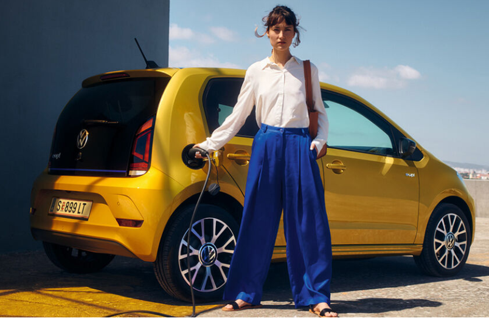
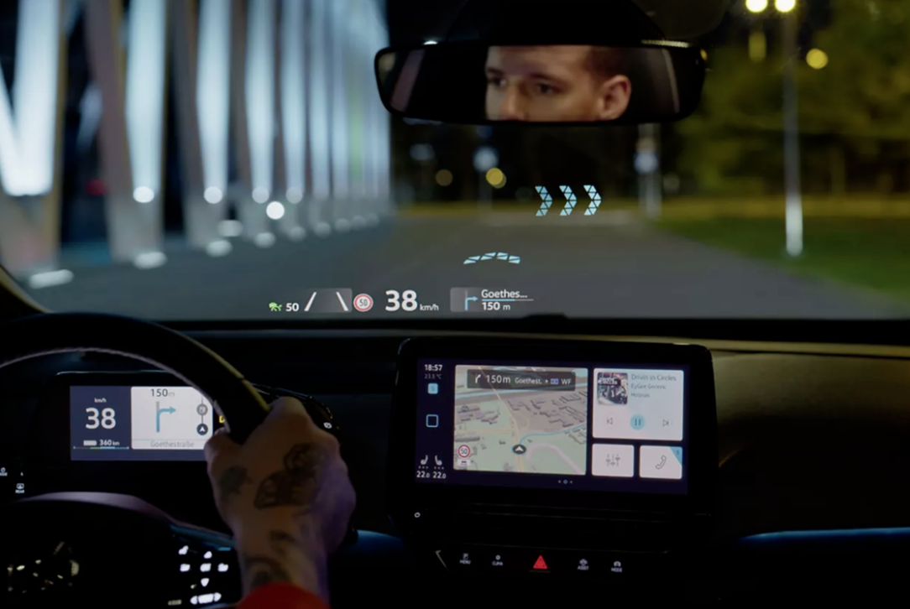
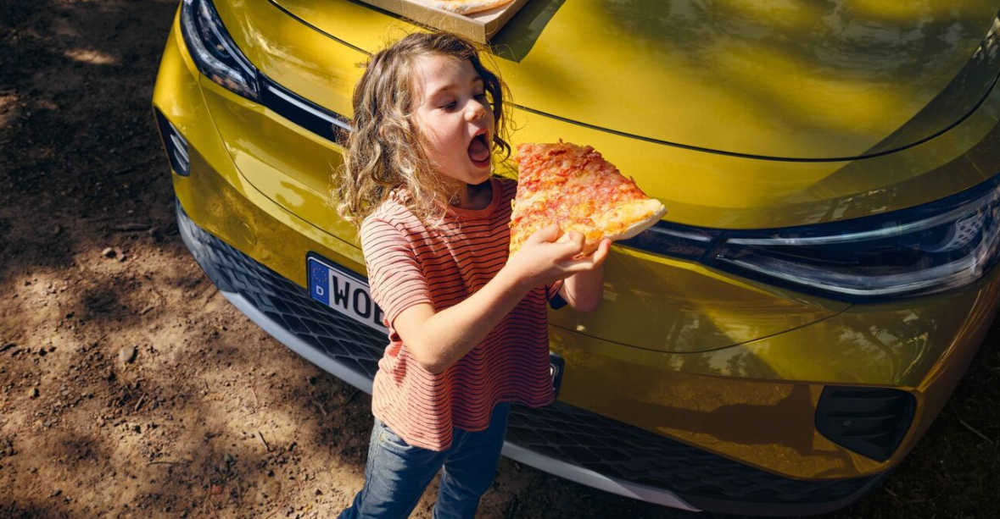
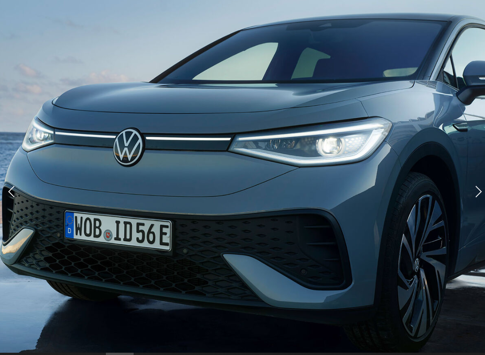

e-up! it has many exciting elements.
- e-up!: power consumption in kWh/100 km: 12.7-12.9 (in combined mode); CO2 emissions in g/km: 0
- In practice, effective range varies depending on driving style, speed, use of comfort/auxiliary consumers, outside temperature, number of passengers/load and topography. A guideline for the respective vehicle is provided by the so-called range of autonomy, which 80% of our customers are expected to reach as an annual average.The lower limit of the range covers in this case also driving at moderate speeds on the highway, as well as driving at low outside temperatures in winter.
-
To use Car-Net services you need a Volkswagen ID user account and you must log in with your username and password. In addition, a separate contract with Volkswagen AG must be concluded online. To be able to use the services for the entire duration, after handing over the vehicle you have 90 days to register the vehicle at www.portal.volkswagen-we.com. In case of a registration after this term, the free period is reduced.
Use of online mobile services from Car-Netis possible through an integrated Internet connection. The related costs incurred within Europe for data traffic are covered by Volkswagen AG as part of the network coverage, with the exception of webradio and hybrid radio services. For the use of the webradio and hybrid radio services and the WLAN hotspot, data packages can be purchased for a fee from the external mobile phone partner "Cubic Telecom", which can be used in the network coverage area of many European countries. Information on prices and countries covered can be found at https://vw.cubictelecom.com Alternatively, the use of Internet radio and hybrid radio is possible via a mobile terminal (e.g. smartphone) with the ability to function as a mobile WLAN hotspot. In this case, the corresponding services are only available in conjunction with an existing or separate mobile phone contract between you and your mobile service provider and only within the coverage area of that mobile network. Receiving data packets from the Internet may incur additional costs, depending on your mobile phone plan and especially for use abroad (e.g. roaming charges). To use the free We Connect app, you need a smartphone with a compatible iOS or Android operating system and a SIM card with a data option with an existing or separate mobile phone contract between you and your mobile service provider. The availability of the individual Car-Net services described in the packages ("Guide & Inform Premium" and "Security & Service") may differ from country to country. The Services are available for the agreed contractual period and may be subject to content changes during the contractual period, or may be cancelled. You can find detailed information at www.volkswagen.ro/connectivity and at your Volkswagen partner. Information on mobile phone tariff conditions is avilable from your mobile phone provider. The Services are available for the agreed contractual period and may be subject to content changes during the contractual period, or may be cancelled. You can find detailed information at www.volkswagen.ro/connectivity and at your Volkswagen partner. Information on mobile phone tariff conditions is available from your mobile phone provider. The Services are available for the agreed contractual period and may be subject to content changes during the contractual period, or may be cancelled. You can find detailed information at www.volkswagen.ro/connectivity and at your Volkswagen partner. Information on mobile phone tariff conditions is available from your mobile phone provider.
- Software and support are not compatible with all smartphones. Your Volkswagen partner will be happy to inform you about this.
ID.3. Says hello. It electrifies you. It takes you further.
- The ID.3 marks the beginning of a new era, a dynamic era in the world of electric mobility. Electrifying performance meets revolutionary design and practicality. For those who want a change. The future is ready. The future awaits you. Get on board now!
- Do you want an acoustic test drive? You will enjoy your new ID.3 with all your senses. In cooperation with a renowned composer, we created a distinctive sound for the ID. family: the ID sound.
- Super-smart: the intelligent lighting concept ID.Light communicates visually with you and helps you navigate relaxed traffic, together with the optional navigation system. Using light and signaling, the system recommends the necessary lane changes. It can also warn you and help you get back on track if you've strayed into the wrong lane. If you use voice control, a light signal will respond to your voice. When you leave ID.3, ID.Light will say goodbye. With a smart light signal.
- The optional AR head-up display sends useful information into the driver's direct field of vision, greatly simplifying driving. For example, it shows you where to turn or which lane to choose. The projection on the windshield and what is happening on the asphalt seem to become a single image. For additional driving comfort. Daily.
- In the morning you run to work, leaving the children at school and in the evening you return the same way: basically no problem with a charged battery. Any of the three battery variants, with different sizes, available for the ID.3 can handle such a request. You have a choice of 45 kWh, 58 kWh and 77 kWh batteries.
- The ID.3 recognizes you when you approach it with the key equipped with the optional Keyless Advanced entry and start system. The optional Matrix LED headlights, with their attractive design, flash briefly, as if winking at you, giving the car a somewhat human character. The ID.Light inside makes you feel instantly welcome. When the car starts, it makes a specific little sound to get you excited to hit the road. When you leave ID.3, ID.Light will say goodbye. With a smart light signal.
-
We Connect ID. App is a new app for IOS & Android developed for ID model. 3, which combines We Connect Start and We Charge.
You can easily search and find public charging stations in the app and check availability in real time. You can view all charging processes for complete cost transparency. Even fare and charge card management is just a tap away. Sounds good? Download the app here.
ID.4.Destined for greatness:powerful like an SUV, sustainable like an ID.
- A completely new concept of space that gives you freedom. Electric performance, meant to excite. And intuitive comfort in operation, which makes everything very simple.
- Set off comfortably to the office in the morning, drop the kids off at school on the way, and drive back in the evening with a battery charge. You have a net energy capacity of 77 kWh in the Pro equipment version, with power up to 150 kW (Pro).
- Does your hobby involve complex equipment? Do you have large quantities to transport for business purposes? No problem for the ID.4: The towing device available on request is designed for loads of up to 750 kg (without braking system) resp. 1,000 kg (with braking system) ¹⁾ . If you don't need the towing device at the moment, you can fold it under the bumper in a few movements so that it is no longer visible.
- Thanks to the huge glass surface, which stretches almost the entire width of the roof, the optional panoramic glass roof is an eye-catcher. Even more beautiful: the unobstructed view of the sky. In addition, the smoked glass ensures pleasant temperatures. The sunshade roller, which you can operate very conveniently, for example, by voice command, protects against the strong rays of the sun. Say ″ Hi ID., show me the stars ″ and the sun visor will open.
- An urban SUV with a stunning design concept and the steering wheel of a small car: The new ID.4 proves how attractive electric mobility can be. With perfect 18-inch*- or optional 19- to 21-inch light-alloy wheels,roof bars for additional luggage, built-in door handles for improved aerodynamics, optional 3D LED taillights with dynamic indicators and another very special element: an optional light line that stretches front and rear to the redesigned Volkswagen logo.
- Thanks to the huge glass surface, which stretches almost the entire width of the roof, the optional panoramic glass roof is an eye-catcher. Even more beautiful: the unobstructed view of the sky. In addition, the smoked glass ensures pleasant temperatures. The sunshade roller, which you can operate very conveniently, for example, by voice command, protects against the strong rays of the sun. Say ″Hi ID., show me the stars″ and the sun visor will open.
ID.5.The elegant form of efficiency
- With its powerful electric performance and graceful silhouette, the new ID.5 successfully represents a modern symbiosis between SUV and coupé. Over-the-Air upgradeable and ready to redefine electric mobility.
- With a standard net battery energy content of 77 kWh (ID.5 Pro combined power consumption in kWh → 100 km: xx,x; combined CO2 emissions in g→km: 0; efficiency class: A+++. ID.5 Pro Performance combined power consumption in kWh→100 km: xx,x; combined CO2 emissions in g→km: 0; efficiency class: A+++.), the ID.5 charges so quickly (with up to 135 kW (CC)), as well as smart in the future.
- The new ID.5 can optionally shine with a feature that makes it stand out at first glance: the innovative IQ.LIGHT system. The matrix technology of this system enables permanent high beam driving without blinding other road users1. An elegant light strip stretches between the attractively shaped matrix LED headlights and the Volkswagen logo. And what impresses at the front must of course also be found at the rear: the package includes the optional 3D LED rear light units with animated brake light and integrated dynamic indicator that indicates the desired direction with a fluid light movement.
- Give your ID.5 model more personality. Choose from ten standard colors (30 colors are optional) and gently illuminate the interior of the vehicle, including the dashboard, mobile phone holder and doors. Cooler or warmer light - the choice is exclusively yours.
- On this page you will find useful information on maintenance and inspection topics for your ID.5 model. Find out when your car is due for service and read more about inspection volume here.